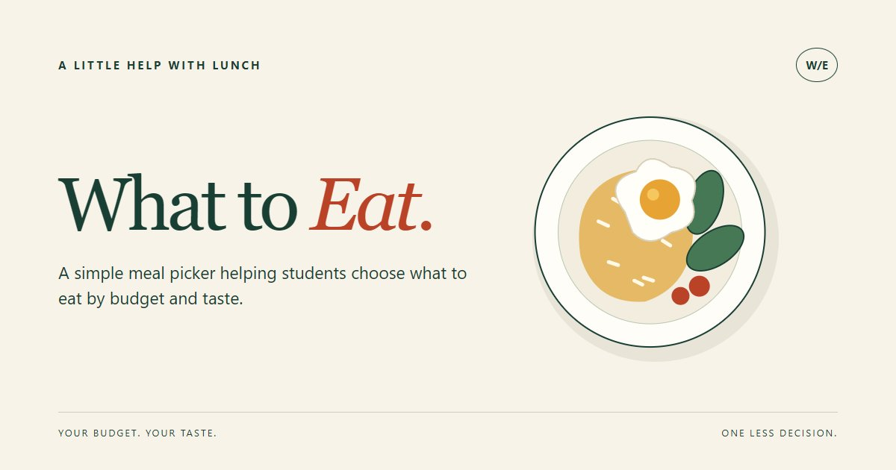

WHAT TO EAT / PART 02
先给网站一个清楚的样子。
这是个人项目的初始分享封面，不是四页网站的首页。标题、配色和餐盘图形将为后续页面提供设计方向。

缩小后是否还能读懂？
三种主色
奶油色 #F7F3E8深绿色 #193F35橘红色 #BA4327
为什么这样设计？
浅色底让内容清楚，深绿色用于主要文字，橘红色突出“吃”这个主题。餐盘用简单图形表示食物，不暗示我们已经接入真实餐厅或外卖服务。
WHAT TO EAT / PART 02
这是个人项目的初始分享封面，不是四页网站的首页。标题、配色和餐盘图形将为后续页面提供设计方向。

浅色底让内容清楚，深绿色用于主要文字，橘红色突出“吃”这个主题。餐盘用简单图形表示食物，不暗示我们已经接入真实餐厅或外卖服务。